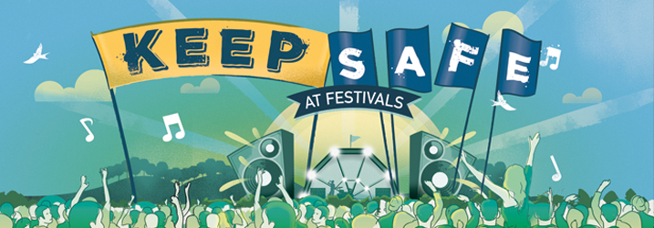

Personal Safety
Personal Safety
We don’t accept any discrimination towards any individual or groups of individuals. Irrespective of the background of the individual, be that gender, race, disability, age, religion or belief, sexual orientation, gender reassignment, marital or civil partnership status, pregnancy or maternity. We are proud of the diverse nature of our festivals and their customers, if you see or experience anyone undermining this - no matter the severity - please report it immediately to one of our onsite staff.
- Decide on a meeting point with your friends. Choose a time and place to meet up later in case you get separated from each other.
- Learn the layout of the site – particularly your camping area so you can easily find toilets and stewards.
- Pick out memorable points near your campsite to help remember where your camping spot is located. Are there landmarks nearby that can help you find it?
- Get to know the people who are camped around you. It makes for a nicer environment and it means you’ll be familiar with who should be coming and going in your area.
- Keep your phone charged in case you’re separated from your friends.
- Stay hydrated. There are tested drinking water points throughout the arena which are free to use.
- For a full list of what you can and can’t bring into the campsite, please view the What You Can and Can't Bring chart under Camping.
- Keep your wits about you. Drink responsibly and know your limit.
- Carry a torch with you or enable the torch on your phone to use for when it gets dark.
- Festival stewards are here to help you. Don’t be worried about asking for help in any situation, whether it’s asking for directions or to report something or someone you’re worried about.
- Don’t leave valuables like your phone, purse or car keys in your tent or unattended vehicles. Lockers are available to rent to store your belongings.
- The Welfare Tent is open 24 hours and is staffed by experienced and supportive people. They can provide confidential advice about drugs, alcohol, legal highs and sexual health, and offer support if you need to talk. They offer a monitored rest and recovery area if you’ve overdone it. Please go to the Welfare Tent if you experience any problems or need to talk to someone for any reason.
- Those with chronic conditions such as epilepsy, asthma and diabetes should bring all their usual medications to cover the festival period, and to be aware they may require hospital treatment if they don't take it.
Security
A search may be conducted as a condition of entry to premises.
Incidents of crime and disorder will be reported to the Gardaí.
Entry to the premises will be refused to any person who appears to be drunk, acting in a threatening manner or is violent. Entry to the premises will be refused to anyone convicted by the Gardaí of an offence of drunkenness, violence or threatening behaviour or the use or distribution of illegal substances.
Anyone caught burning toxic materials, creating large bonfires, throwing gas canisters or aerosols onto fires, putting tents on fires, throwing missiles or taking part in anti-social behaviour that endangers other festival goers will be evicted from site.
Security staff will be patrolling in the campsites 24 hours throughout the festival. They are there to help and are also watching for suspicious behaviour. There is also CCTV that is monitored by Security Control as well as theft spotters based throughout the campsites.
Please contact security if you need any assistance.
If you have an incident with a security guard, steward or any other member of our staff that you want to tell us about – please make a note of their tabard number, or the name on their pass. Without this information we can do very little as identifying them becomes very difficult. You can make a complaint via the Information Tent or the Welfare Tent or through your Zone Manager patrolling your zone in a burgundy tabard and your complaint will be passed straight on to the organisers onsite.
General Safety
- Look after yourself, don’t overdo it, and look out for others.
- Remember there is more chance of catching an infection in a field than at home so make sure you use the water points and hand sanitizer stations at the toilet blocks to wash your hands regularly.
- Electric Picnic takes place on uneven parkland with stone tracks and metal track way. Whilst we take every effort to ensure that suitable walkways are available there will be some areas where care should be taken due to uneven ground conditions. Take care, especially at night and during periods of adverse weather. Strong shoes for walking are a good idea – as is a torch after dark.
- Please do not climb on any trees onsite. It is dangerous and may damage the tree.
- Please don’t dig holes as the site is normally home to cattle and sheep.
- Illegal drugs are no more legal onsite than off.
- Give any passing security or emergency vehicles plenty of space to pass and don’t ride on vehicles.
- Serious sunstroke, sunburn or cancer can be caused by the sun on unprotected skin.
- Prolonged exposure to high volume noise can cause severe hearing damage.